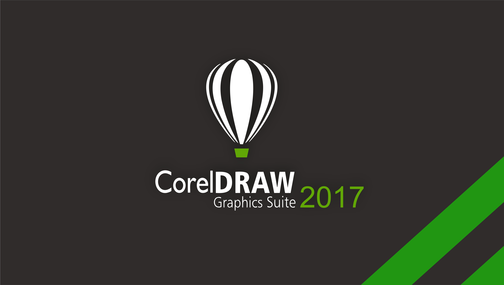
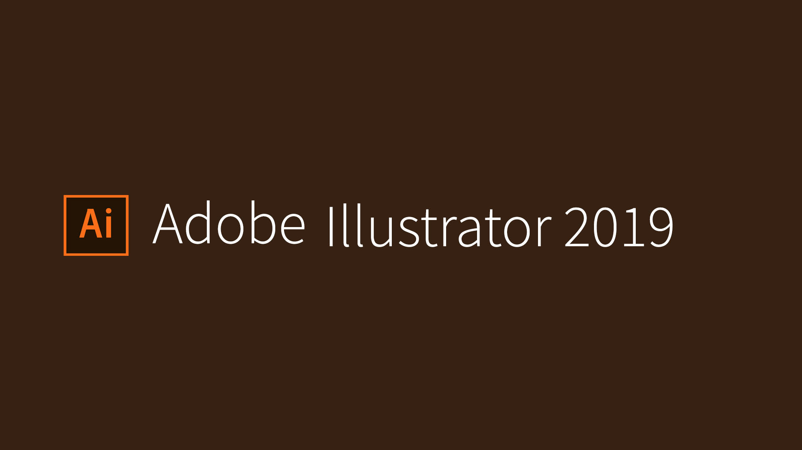

É uma manifestação de arte gráfica feita exclusivamente por meio de softwares. Essa técnica ganhou o mercado e disparou à frente da ilustração tradicional por ser mais rápida não só de produzir, como também de modificar.
Além disso, a pintura digital fornece mais detalhes e permite que a arte possa ser realizada com alta qualidade e resolução, facilitando seu uso em estruturas maiores, como banners impressos.
Nos dias de hoje, a Ilustração Digital é o meio mais comum de produção de imagens depois da fotografia. Dentro do mercado do entretenimento, a Ilustração Digital é amplamente utilizada em jogos, filmes e capas de livros e abrange inúmeras outras possibilidades. Nos jogos, a Ilustração Digital é muito utilizada em splash arts, telas de loading, portraits dos personagens, imagens de divulgação, sendo até mesmo recurso para a criação de jogos inteiros, como Card Games. Além disso, existem também jogos de tabuleiros que utilizam ilustrações na sua produção. Nos filmes, a Ilustração Digital é usada nos matte paintings e no desenvolvimento de personagens e cenários, principalmente. É difícil pensar em uma produção que não conte com ilustrações digitais.

O CorelDRAW surgiu em 1989, apenas em inglês. Em 1995, surgiu a primeira versão em 32 bits (CorelDRAW 6). Dois anos depois surgiu a primeira versão para computadores Macintosh. No ano seguinte, foi lançada a primeira versão para Linux. Em 2003, surgiu a versão 12 para Windows XP. A última versão criada no início de 2006 se denomina Corel X3.
Tem como concorrentes directos principais os programas Adobe Illustrator e Macromedia Freehand, em ambiente software proprietário. Em software livre, para ambiente Linux, o principal concorrente é o Inkscape.
História CorelDraw
O CorelDRAW surgiu em 1989, apenas em inglês. Em 1995, surgiu a primeira versão em 32 bits (CorelDRAW 6). Dois anos depois surgiu a primeira versão para computadores Macintosh. No ano seguinte, foi lançada a primeira versão para Linux. Em 2003, surgiu a versão 12 para Windows XP. A última versão criada no início de 2006 se denomina Corel X3.
Tem como concorrentes directos principais os programas Adobe Illustrator e Macromedia Freehand, em ambiente software proprietário. Em software livre, para ambiente Linux, o principal concorrente é o Inkscape.
Corel Draw
CorelDRAW é um programa de desenho vetorial bidimensional para design gráfico pertencente a Corel. Um aplicativo de ilustração e layout de página que possibilita a criação e a manipulação de vários produtos, como por exemplo: desenhos artísticos, publicitários; logotipos; capas de revistas, brochuras, capas de CD’s; criação de banner para sites de Internet, botões, ícones, animações gráficas, etc. O CorelDRAW é uma solução confiável e completa para a criação de comunicações visuais de quaisquer meio.
A história do software começa um pouco antes de ele ser um produto Adobe. Em 1987, Thomas Knoll trabalhava em sua tese de doutorado quando concebeu um código, em seu computador, que mostrava imagens em tons de cinza em um monitor de bitmap preto e branco. Como a criação não tinha muita relação com a sua tese, o projeto foi deixado de lado. Só mais tarde, quando seu irmão John Knoll se encantou pelo esboço do programa e percebeu seu potencial, Thomas retomou à sua ideia. Em 1990, os Knoll se juntaram para criar um aplicativo inteligente e apto para executar retoques em fotografias e imagens. No mesmo ano, a Adobe comprou e lançou o programa.
História Photoshop
A história do software começa um pouco antes de ele ser um produto Adobe. Em 1987, Thomas Knoll trabalhava em sua tese de doutorado quando concebeu um código, em seu computador, que mostrava imagens em tons de cinza em um monitor de bitmap preto e branco. Como a criação não tinha muita relação com a sua tese, o projeto foi deixado de lado. Só mais tarde, quando seu irmão John Knoll se encantou pelo esboço do programa e percebeu seu potencial, Thomas retomou à sua ideia. Em 1990, os Knoll se juntaram para criar um aplicativo inteligente e apto para executar retoques em fotografias e imagens. No mesmo ano, a Adobe comprou e lançou o programa.
Photoshop
O Adobe Photoshop é um software definido como editor de imagens. Desenvolvido pela Adobe Systems, o aplicativo, sem dúvidas, é o que possui maior destaque no mundo da fotografia e do design gráfico. Distribuído em todo o mundo, disponível para os sistemas Microsoft Windows e Mac OS X (pode ser rodado no Linux através da camada de compatibilidade Wine), em mais de 25 idiomas e com versões para smartphones e tablets (Android, iOS e Windows Phone), o programa é considerado o líder no mercado dos editores profissionais.

Sob alguns aspectos, o lançamento da primeira versão foi arriscada: o Macintosh não detinha uma fração significativa de mercado, a única impressora que suportava documentos do Illustrator era a Apple LaserWriter (na altura, recente e dispendiosa), e o paradigma de desenho das curvas de Bézier era novidade para o utilizador médio. Não só o Macintosh mostrava apenas gráficos monocromáticos, assim como as opções de visualização estavam limitadas a monitores de 9 polegadas, típicos dos modelos Macintosh 128k, 512k e XL.
História Illustrator
Sob alguns aspectos, o lançamento da primeira versão foi arriscada: o Macintosh não detinha uma fração significativa de mercado, a única impressora que suportava documentos do Illustrator era a Apple LaserWriter (na altura, recente e dispendiosa), e o paradigma de desenho das curvas de Bézier era novidade para o utilizador médio. Não só o Macintosh mostrava apenas gráficos monocromáticos, assim como as opções de visualização estavam limitadas a monitores de 9 polegadas, típicos dos modelos Macintosh 128k, 512k e XL.
Illustrator
Adobe Illustrator é um editor de imagens vetoriais desenvolvido e comercializado pela Adobe Systems. Foi criado inicialmente para o Apple Macintosh em 1985, e, foi comercializado para todo o público em 1995 como complemento comercial de software de fontes da Adobe e da tecnologia PostScript desenvolvida pela empresa.
Devido ao Adobe Illustrator ser um programa estável, assim como à sua curva de aprendizagem, os utilizadores perceberam que o programa não só era melhor, como finalmente resolveu o problema de imprecisão de outros programas existentes para o utilizador médio, como o Apple MacDraw. Forneceu também uma ferramenta aos utilizadores que não podiam adquirir programas dispendiosos ou aprenderem a trabalhar em programas exigentes como o AutoCAD. O Illustrator preencheu um nicho de mercado não explorado, entre os programas de desenho e programas CAD.